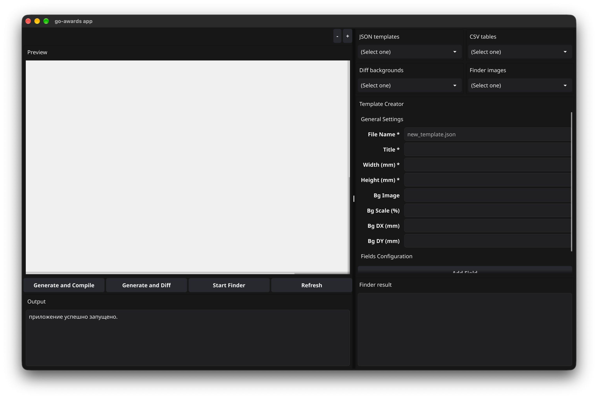
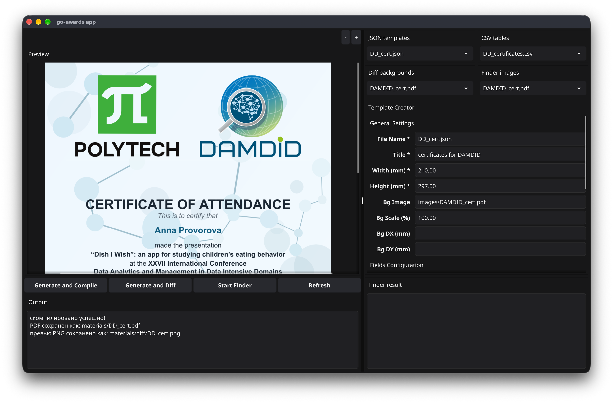
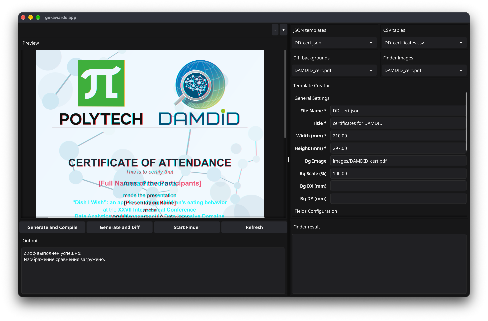
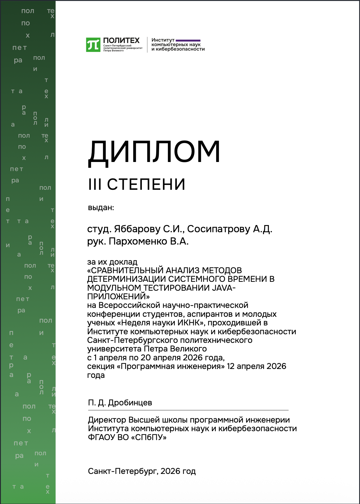

Как работает go-awards
Программа go-awards помогает создавать наградные документы по шаблону. Основной процесс состоит из четырёх этапов: подготовки данных, настройки шаблона, генерации и проверки результата. Ниже каждый этап разобран подробнее и дополнен изображениями.
-
📋 Подготовить данные участников
Работа начинается с подготовки CSV-файла. Это текстовый формат для хранения табличных данных: каждая строка соответствует одному участнику, а отдельные значения разделяются специальным символом. В файле можно хранить имя участника и другую информацию, необходимую для заполнения наградного документа.
Перед генерацией стоит проверить написание имён, отсутствие лишних строк и полноту данных. Ошибка в исходном файле может перейти в готовый документ. Для первого запуска удобно подготовить небольшой тестовый список: так проще проверить результат, исправить шаблон и только после этого перейти к полному набору участников.
-
🎨 Создать или выбрать шаблон

Интерфейс программы и настройки шаблона. Шаблон определяет оформление будущего документа. Он хранится в формате JSON и редактируется через интерфейс программы. В общих настройках задаются размеры страницы и фоновое изображение. Отдельные текстовые блоки позволяют расположить содержимое поверх фона. Для добавления нового блока используется кнопка с плюсом.
При настройке важно учитывать длину текста. Короткое имя и длинное название доклада занимают разное пространство. Поэтому шаблон лучше проверять на нескольких примерах. Обратите внимание на размеры шрифта, переносы строк, расстояния между блоками и свободное место у краёв страницы.
-
⚙️ Сгенерировать и сравнить документы

Результат генерации документа в окне программы. После подготовки данных и шаблона можно перейти к генерации. В программе предусмотрены кнопки Generate and Compile и Generate and Diff. Первая запускает создание документа, а вторая позволяет дополнительно сравнить результат с эталоном. Полученное изображение отображается в области предварительного просмотра.
Режим сравнения помогает проверить расположение элементов. Цветные контуры показывают расхождения между созданным документом и эталоном. По ним можно заметить смещение текста или фона и скорректировать настройки шаблона. При этом различия в имени участника и других подставленных данных ожидаемы: они меняются от документа к документу.
-
✅ Проверить готовый документ

Выделение различий между документами. Последний этап — проверка результата в PDF. Просмотрите документ целиком, затем увеличьте отдельные участки. Убедитесь, что текст читается, строки не перекрывают друг друга, а имена и названия указаны правильно. Особенно внимательно стоит проверить длинные подписи и участки рядом с границами текстовых блоков.
Если результат требует исправлений, вернитесь к данным или настройкам шаблона и повторите генерацию. После проверки нескольких документов можно переходить к остальным участникам. Сохранённый шаблон пригодится для следующих мероприятий с похожим оформлением.

Пример наградного документа.